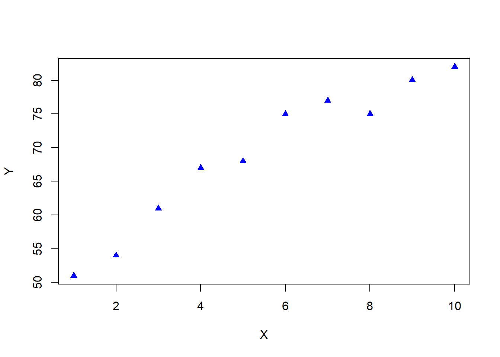
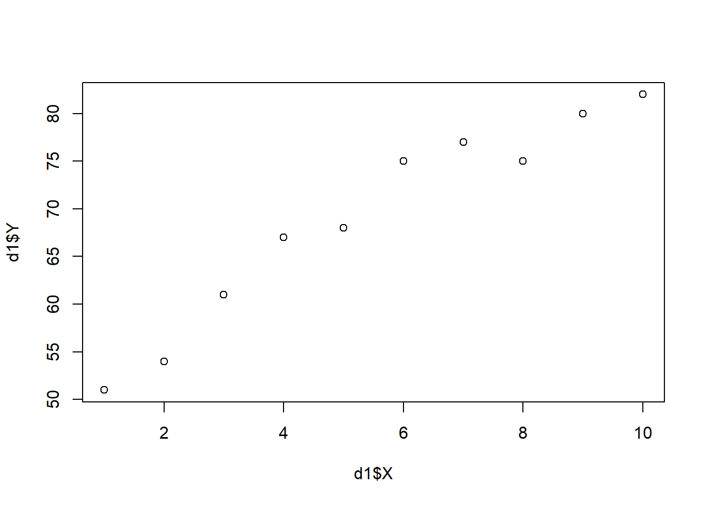

INTRODUÇÃO
Sofware R - Análise de Dados
A análise de dados tem se tornado cada vez mais essencial em diversas áreas do conhecimento, sendo uma ferramenta estratégica para tomada de decisões, identificação de padrões e geração de conhecimento a partir de informações brutas. Nesse contexto, o R se destaca como uma linguagem de programação poderosa e amplamente utilizada para análise estatística, visualização de dados e ciência de dados em geral. Gratuito e de código aberto, o R oferece uma ampla gama de pacotes e recursos que facilitam desde análises básicas até modelagens complexas.
Ao iniciar sua jornada no universo da análise de dados com o RStudio, é fundamental saber por onde começar. Há uma variedade de materiais valiosos disponíveis, sendo essencial saber como acessá-los e aproveitá-los de forma estratégica. Uma obra recomendada para iniciantes é o livro Introdução à Ciência de Dados no R, que fornece uma base sólida para compreender os principais conceitos da área e aplicar técnicas de análise de dados de maneira eficiente.
É importante destacar que os materiais disponibilizados neste site foram elaborados com o objetivo de apoiar o aprendizado. No entanto, devido à complexidade dos temas abordados, nem todos os conteúdos contam com anotações detalhadas. Por isso, esses recursos devem ser utilizados como material complementar, e não como fonte principal de estudo.
Com isso em mente, damos início à nossa jornada no R, explorando seus objetos e funções mais básicas — etapa fundamental para quem deseja desenvolver habilidades sólidas em análise de dados.
Download R Studio
Link para instalação do R e do R Studio (https://posit.co/download/rstudio-desktop/)
Objetos e funções
Objetos no R
Em R, objetos são estruturas que armazenam informações, podendo ser números, textos, funções ou até conjuntos de dados. Para criar um objeto, utiliza-se o operador de atribuição <-. Por exemplo:
Neste exemplo, o número 1 foi atribuído ao objeto chamado a. As bases de dados em R geralmente são armazenadas como data frames, que são objetos que organizam dados em forma de tabela (colunas e linhas).
[1] 10[1] 1.414214[1] 2.236068[1] 3.650282Code
[1] 6[1] 14[1] 2.5[1] 108Code
[1] 1.414214[1] 3[1] 2.828427[1] 2.65359e-06Code
[1] 1.224606e-16Code
#[1] 1.224606e-16 bem mais proximo de zero ...
# Lista resumida de algumas funcoes aritmeticas no R:
#sqrt= raiz quadrada
#abs= valor absoluto (positivo)
#sin, cos, tan = funcoes trigonometricas
#asin, acos, atan = funcoes trigonometricas inversas
#sinh, cosh, tanh = funcoes hiperbolicas
#asinh, acosh, atanh = funcoes hiperbolicas inversas
#exp, log = exponencial e logaritmo natural
#log e o logaritmo natural (ln)
log(5) # log natural ou neperiano de 5[1] 1.609438[1] 0.69897[1] 2.321928[1] 5.002811Code
[1] 10[1] 1 3 6[1] 1[1] 3[1] 3[1] TRUE[1] FALSE[1] TRUE[1] FALSE [1] 1 2 3 4 5 6 7 8 9 10 [1] 0.0 0.1 0.2 0.3 0.4 0.5 0.6 0.7 0.8 0.9 1.0[1] 0.6 0.7 0.8 0.9 1.0[1] 0.5 0.6 0.7 0.8 0.9 1.0 [1] TRUE TRUE TRUE TRUE TRUE TRUE FALSE FALSE FALSE FALSE FALSE [1] 0.00000000 0.09090909 0.18181818 0.27272727 0.36363636 0.45454545
[7] 0.54545455 0.63636364 0.72727273 0.81818182 0.90909091 1.00000000[1] 1 1 1 1 1[1] 1 1 1 2 2 2 2 2 [1] 1 2 3 1 2 3 1 2 3 1 2 3 1 2 3 [1] 1 1 1 1 1 2 2 2 2 2 3 3 3 3 3 [1] 87.04903 62.87961 67.22015 68.80351 68.76039 72.68184 77.26841 72.33135
[9] 73.39114 64.48085[1] 714.8663[1] 71.48663[1] 48.59807[1] 6.971231[1] 62.87961[1] 87.04903 Min. 1st Qu. Median Mean 3rd Qu. Max.
62.88 67.61 70.57 71.49 73.21 87.05 Min. 1st Qu. Median Mean 3rd Qu. Max.
1.00 3.25 5.50 5.50 7.75 10.00 Data Frame
Um data frame no R é uma estrutura de dados bidimensional que armazena informações em forma de tabela, com linhas e colunas. Cada coluna pode conter diferentes tipos de dados (números, textos, fatores etc.), mas todas as colunas devem ter o mesmo número de linhas. É amplamente usado para manipulação e análise de dados estatísticos.
Code
# Criação do data frame
#Cria um data frame chamado d1 com: Coluna X: números de 1 a 10. Coluna Y: valores fornecidos manualmente.
#d1- Mostra a tabela completa com as colunas X e Y.
#names(d1)- Mostra os nomes das colunas do data frame: "X" e "Y".
# d1$X e d1$Y - Acessa separadamente os valores das colunas X e Y
#plot(d1, pch=17, col="blue") -Cria um gráfico de dispersão dos dados (Y em função de X).
#pch=17 define o símbolo dos pontos como triângulo.col="blue" define a cor azul para os pontos.
# A seguir:
d1 <- data.frame(X = 1:10, Y = c(51, 54, 61, 67, 68, 75, 77, 75, 80, 82))
d1 X Y
1 1 51
2 2 54
3 3 61
4 4 67
5 5 68
6 6 75
7 7 77
8 8 75
9 9 80
10 10 82[1] "X" "Y" [1] 1 2 3 4 5 6 7 8 9 10 [1] 51 54 61 67 68 75 77 75 80 82

Funções e Argumentos
Funções são blocos de código que realizam tarefas específicas. Ao chamar uma função, os valores passados entre parênteses são chamados de argumentos. Uma função pode receber um ou vários argumentos, separados por vírgulas. Por exemplo:
Neste caso, a função sum() soma os valores 1 e 2, retornando o resultado 3.
Classes
R trabalha com diferentes classes de dados, que determinam o tipo de informação armazenada. Os principais tipos são:
numeric: números (ex.: 3.14, -10, 7)character: textos entre aspas (ex.: “banana”, “R é ótimo”)logical: valores lógicos, comoTRUEouFALSE
Textos são geralmente utilizados em variáveis categóricas, e sempre devem ser inseridos entre aspas para diferenciá-los de nomes de objetos ou funções.
Vetores
Um vetor é uma estrutura que armazena vários valores do mesmo tipo. Para criar um vetor, usamos a função c() com os valores separados por vírgulas:
Operações Lógicas
Operações lógicas verificam condições e retornam valores booleanos: TRUE (verdadeiro) ou FALSE (falso). Por exemplo:
Principais operadores lógicos:
x < y(x é menor que y?)x <= y(x é menor ou igual a y?)x > y(x é maior que y?)x >= y(x é maior ou igual a y?)x == y(x é igual a y?)x != y(x é diferente de y?)!x(negação de x)x | y(x ou y são verdadeiros?)x & y(x e y são verdadeiros?)x %in% y(x pertence ao vetor y?)xor(x, y)(exclusão lógica: apenas um dos dois é verdadeiro)
Valores Especiais
NA: representa dados faltantes ou desconhecidos. Indica que o valor existe, mas não foi informado.
Outros valores especiais incluem NaN (resultado indefinido), Inf (infinito positivo) e -Inf (infinito negativo).
Operador Pipe
O pipe (%>% do pacote {magrittr} ou |> nativo do R) permite encadear comandos de forma mais clara, passando o resultado de uma operação como entrada da próxima. Isso facilita a leitura e a organização do código. Por exemplo:
dados %>% filter(categoria == “A”) %>% summarise(media = mean(valor))
Cada etapa ocorre de forma sequencial e legível.
Operador Cifrão ($)
O operador $ é utilizado para acessar colunas específicas de um data frame pelo nome. A sintaxe é:
{dados$variavel}
Por exemplo, para acessar a coluna dados de um data frame chamado dad
{dad$dados}
Comentários
No R, o símbolo # é usado para adicionar comentários no código. Tudo que estiver após o # em uma linha é ignorado pelo interpretador e serve apenas como anotação para quem está lendo o script. Comentários são úteis para explicar o que o código faz, registrar observações ou organizar o raciocínio durante a programação. Eles não afetam a execução nem o desempenho do script. É uma boa prática usar comentários para facilitar a manutenção e o entendimento do código, especialmente em projetos maiores ou colaborativos.